library(tidyverse)
library(cowplot)
library(rethinking)
library(patchwork)week 2: linear model and causal inference
geocentric models
Workspace setup:
Gaussian distributions
Aka, normal distributions.
These distributions are unimodal and symmetric. They tend to naturally occur. And they tend to be consistent with our assumptions. (e.g., measures are continuous values on a real number line, centered around a specific value).
Later in the course, we’ll move away from Gaussian distributions, but they’re a useful place to start.
Recipes for models
- Recognize a set of variables to work with. (Data and parameters.)
- Define each variable either in terms of the other variables OR in terms of a probability distribution.
- The combination of variables and their probability distributions defines a joint generative model that can be used to simulate hypothetical observations and analyze real ones.
Here’s an example:
\[\begin{align*} y_i &\sim \text{Normal}(\mu_i,\sigma) \\ \mu_i &= \beta x_i \\ \beta &\sim \text{Normal}(0,10) \\ \sigma &\sim \text{Exponential}(1) \\ x_i &\sim \text{Normal}(0,1) \\ \end{align*}\]
Model for globe-tossing
Here’s the model for last week’s globe-tossing experiment:
\[\begin{align*} W &\sim \text{Binomial}(N,p) \\ p &\sim \text{Uniform}(0,1) \\ \end{align*}\]
- \(W\) is the observed count of water.
- \(N\) is the total number of tosses.
- \(p\) is the proportion of water on the globe.
The whole model can be read as:
The count \(W\) is distributed binomially with sample size \(N\) and probability \(p\). The prior for \(p\) is assumed to be uniform between 0 and 1.
Model for globe-tossing
Here’s the model for last week’s globe-tossing experiment:
\[\begin{align*} W &\sim \text{Binomial}(N,p) \\ p &\sim \text{Uniform}(0,1) \\ \end{align*}\]
Estimating the posterior
We can use grid approximation to estimate the posterior distribution.
w <- 6; n <- 9
p_grid <- seq( from=0, to=1, length.out=100 )
posterior <- dbinom( w,n,p_grid )*dunif( p_grid,0,1 )
posterior <- posterior / sum(posterior)plot(p_grid, posterior, type = "l")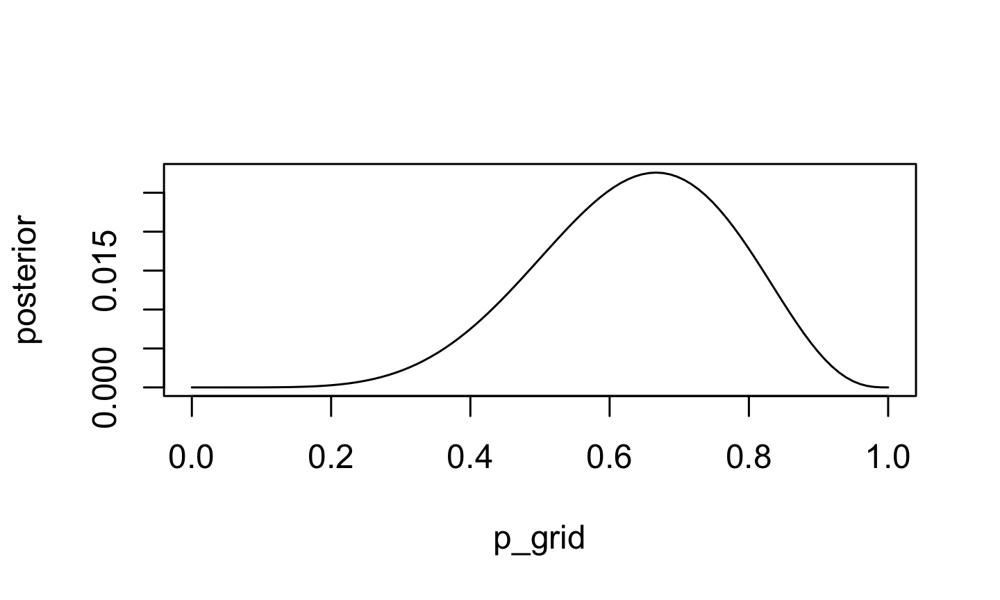
Look familiar?
Simulating parameters from the prior
nsims = 1e4
sim_p <- runif( nsims, 0, 1)
dens(sim_p)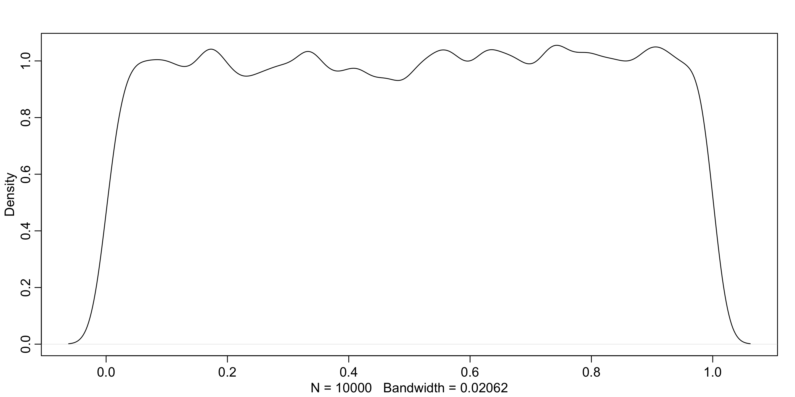
Simulating observations from the prior
sim_w <- rbinom( nsims, 9, sim_p)
simplehist(sim_w)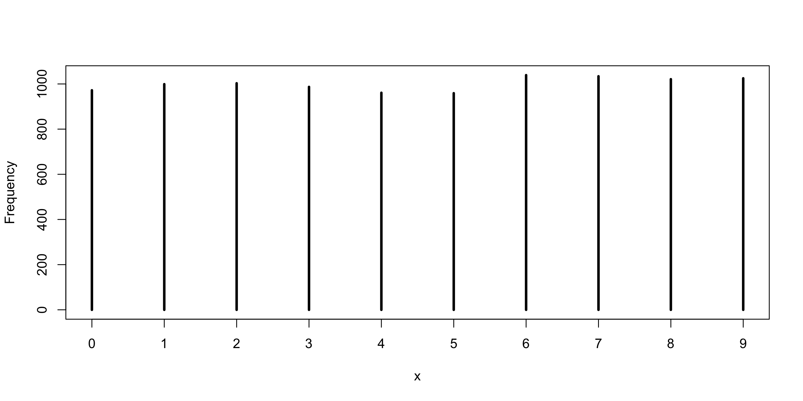
Simulating from your priors – prior predictive simulation – is an essential part of modeling. This allows you to see what your choices imply about the data. You’ll be able to diagnose bad choices.
an aside about learning in R
At this point in the course, I’m going to start throwing a lot of code at you. Do I expect you to memorize this code? Of course not.
Do you need to understand every single thing that’s happening in the code? Nope.
But, you’ll learn a lot by taking the time to figure out what’s happening in a code chunk. Class time will frequently include exercises where I ask you to adapt code I’ve shared in the slides to a new dataset or to answer a new problem. When doing so, go back through the old code and figure out what’s going on. Run the code one line at a time. Always observe the output and take some time to look at the object that was created or modified. Here are some functions that will be extremely useful:
str() # what kind of object is this? what is its structure?
dim() # what are the dimensions (rows/columns) of this object
head() # give me the first bit of this objectstr(sim_w) int [1:10000] 8 4 3 1 1 4 2 3 2 1 ...dim(sim_w)NULLhead(sim_w)[1] 8 4 3 1 1 4exercise
For the model defined below, simulate observed \(y\) values from the prior:
\[\begin{align*} y_i &\sim \text{Normal}(\mu, \sigma) \\ \mu &\sim \text{Normal}(0, 10) \\ \sigma &\sim \text{Exponential}(1) \end{align*}\]
solution
set.seed(128); nsims <- 1e4
sim_mu = rnorm( nsims, 0, 10)
sim_sig = rexp( nsims, 1)
sim_y = rnorm(nsims,sim_mu,sim_sig)
dens(sim_y)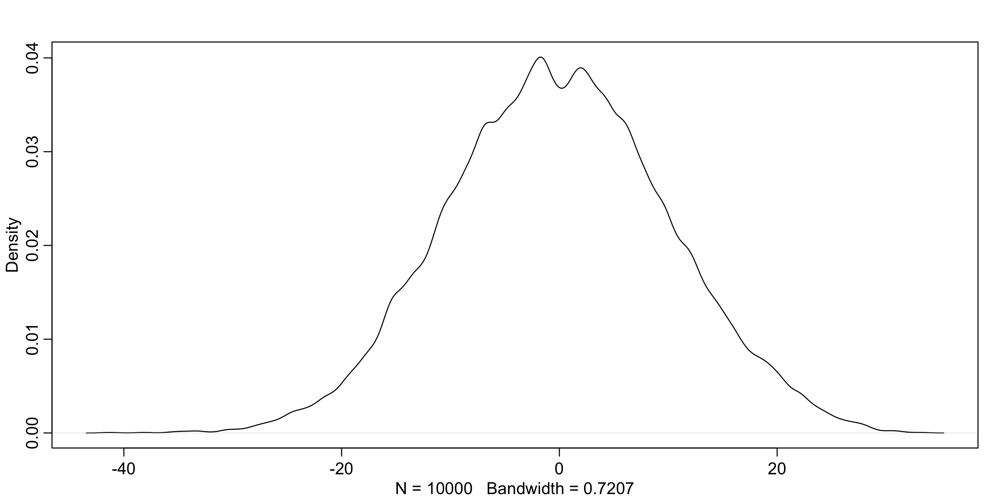
exercise
A sample of students is measured for height each year for 3 years. After the third year, you want to fit a linear regression predicting height using year as a predictor. Write down the mathematical model definition for this regression, using any variable names and priors you choose. Be prepared to defend your choice of priors.
Remember that every student got taller each year. Does this change your choice of priors? How?
The variance in heights for students of the same age is never more than 2.10 feet. Does this lead you to revise your priors?
\[\begin{align*} y_i &\sim \mathcal{N}(\mu_i, \sigma^2) \\ \mu_i &= \beta_0 + \beta_1 x_i \\ \beta_0 &\sim \mathcal{N}(5, 1^2) \\ \beta_1 &\sim \mathcal{N}(.1, .1^2) \\ \sigma &\sim \text{Half-Normal}(0, 10) \end{align*}\]
An example: weight and height
Using the Howell data (make sure you have the rethinking package loaded).
data("Howell1")
d <- Howell1
str(d)'data.frame': 544 obs. of 4 variables:
$ height: num 152 140 137 157 145 ...
$ weight: num 47.8 36.5 31.9 53 41.3 ...
$ age : num 63 63 65 41 51 35 32 27 19 54 ...
$ male : int 1 0 0 1 0 1 0 1 0 1 ...library(measurements)
d$height <- conv_unit(d$height, from = "cm", to = "feet")
d$weight <- conv_unit(d$weight, from = "kg", to = "lbs")
precis(d) mean sd 5.5% 94.5% histogram
height 4.5362072 0.9055921 2.661042 5.4375 ▁▁▁▁▂▂▇▇▁
weight 78.5079631 32.4502290 20.636856 120.1583 ▁▂▃▂▂▁▁▃▅▇▇▃▂▁
age 29.3443934 20.7468882 1.000000 66.1350 ▇▅▅▃▅▂▂▁▁
male 0.4724265 0.4996986 0.000000 1.0000 ▇▁▁▁▁▁▁▁▁▇d2 <- d[ d$age >= 18, ]exercise
Write a mathematical model for the weights in this data set. (Don’t predict from other variables yet.)
Simulate both your priors and the expected observed weight values from the prior.
solution
\[\begin{align*} w &\sim \text{Normal}(\mu, \sigma) \\ \mu &\sim \text{Normal}(130, 20) \\ \sigma &\sim \text{Uniform}(0, 25) \\ \end{align*}\]
solution
Simulate your priors
nsims <- 1e4 # number of simulations
set.seed(128) # reproducibility
sim_mu <- rnorm( nsims, 130, 20) # simulate values of mu
sim_sig <- runif(nsims, 0, 25) # simulate values of sigma
par(mfrow = c(1,3)) # plot display has 1 row, 3 columns
dens_mu <- dens(sim_mu) # density of mu
dens_sig <- dens(sim_sig) # density of sigma
dens_both <- plot(sim_mu, sim_sig, cex = .5, pch = 16,
col=col.alpha("#1c5253",0.1) ) # both together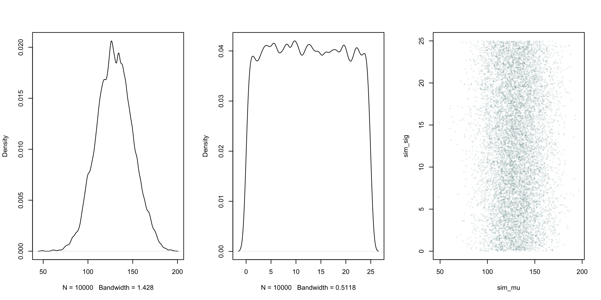
dev.off() # turn off display settingsnull device
1 Simulate values of weight.
sim_h <- rnorm( nsims, sim_mu, sim_sig)
dens(sim_h)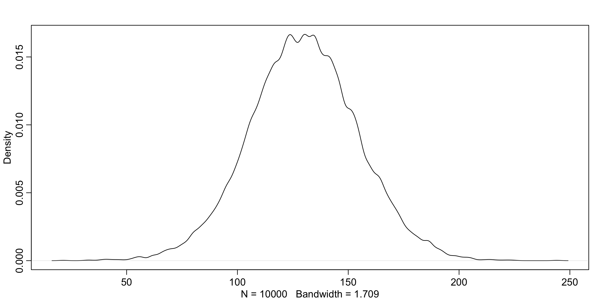
PI(sim_h, .89) 5% 94%
91.11472 169.08230 Use grid approximation to calculate posterior distribution.
(Not necessary to copy, just for teaching purposes.)
# values of mu and sigma to test
mu.list <- seq( from=75, to=165, length.out=200 )
sigma.list <- seq( from=0, to=25 , length.out=200 )
# fit every possible combination of m and s
post <- expand.grid( mu=mu.list , sigma=sigma.list )
# calculate log-likelihood of weights for each combination of m and s
post$LL <- sapply( 1:nrow(post) , function(i) sum(
dnorm( d2$weight , post$mu[i] , post$sigma[i] , log=TRUE ) ) )
# add priors
post$prod <- post$LL +
dnorm( post$mu , 130 , 20 , TRUE ) +
dunif( post$sigma , 0 , 25 , TRUE )
# convert from LL to p
post$prob <- exp( post$prod - max(post$prod) )post %>%
ggplot(aes(x = mu, y = sigma, color = prob)) +
geom_point() +
scale_color_gradient(low = "white", high = "#1c5253") +
theme_cowplot()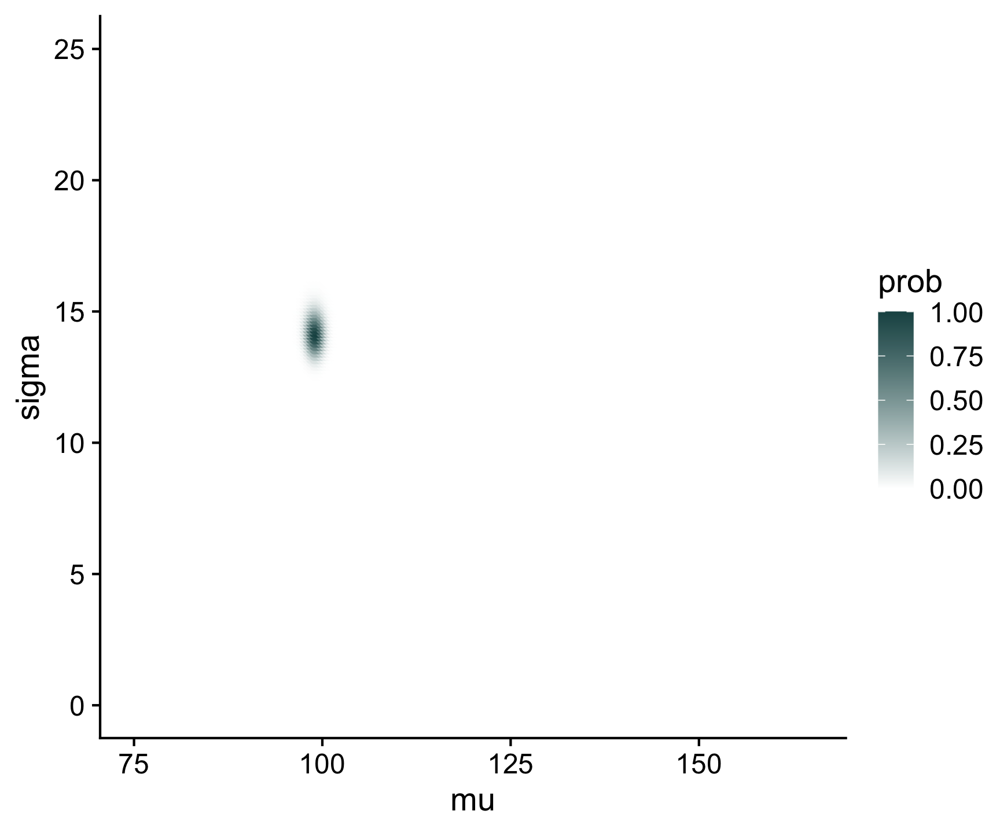
Go back to your code and change the range of values you estimate.
# values of mu and sigma to test
mu.list <- seq( from=90, to=105 , length.out=200 )
sigma.list <- seq( from=12, to=16 , length.out=200 )Rerun all the earlier code.
post %>%
ggplot(aes(x = mu, y = sigma, color = prob)) +
geom_point() +
scale_color_gradient(low = "white", high = "#1c5253") +
theme_cowplot()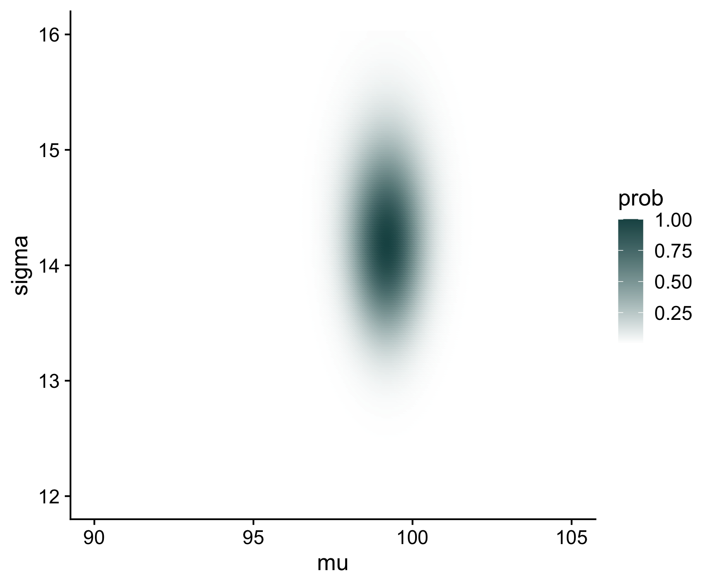
Cool, but we said last week that grid approximation is unwieldy and going to quickly become unmanageable. So let’s repeat this process with quadratic approximation.
We won’t be calculating the probability or likelihood of values directly (too costly), but we can make some assumptions about the shapes of distributions and get an approximation of the shape of the posterior.
flist <- alist(
weight ~ dnorm( mu , sigma ) ,
mu ~ dnorm( 130 , 20 ) ,
sigma ~ dunif( 0 , 25 )
)
m4.1 <- quap( flist , data=d2 )
precis( m4.1 ) mean sd 5.5% 94.5%
mu 99.23233 0.7571453 98.02226 100.4424
sigma 14.21535 0.5358183 13.35901 15.0717These numbers provide Gaussian approximations for each parameter’s marginal distribution. This means the plausibility of each value of \(\mu\), after averaging over the plausibilities of each value of \(\sigma\), is given by a Gaussian distribution with mean 99.23 and standard deviation 0.76.
The function alist() does not evaluate the code, whereas the code list() does.
Our interest in quadratic approximation, recall, is as a handy way to quickly make inferences about the shape of the posterior. The posterior’s peak will lie at the MAXIMUM A POSTERIORI estimate (MAP), and we can get a useful image of the posterior’s shape by using the quadratic approximation of the posterior distribution at this peak.
To build the quadratic approximation, we’ll use quap, a command in the rethinking package. The quap function works by using the model definition you were introduced to earlier in this chapter. Each line in the definition has a corresponding definition in the form of R code. The engine inside quap then uses these definitions to define the posterior probability at each combination of parameter values. Then it can climb the posterior distribution and find the peak, its MAP. Finally, it estimates the quadratic curvature at the MAP to produce an approximation of the posterior distribution. Remember: This procedure is very similar to what many non-Bayesian procedures do, just without any priors.
quap() has approximated a multivariate Gaussian distribution – more than one parameter, and these parameters may be related.
vcov( m4.1 ) mu sigma
mu 0.573269024 0.001827111
sigma 0.001827111 0.287101275diag( vcov( m4.1 ) ) mu sigma
0.5732690 0.2871013 cov2cor( vcov( m4.1 ) ) mu sigma
mu 1.000000000 0.004503687
sigma 0.004503687 1.000000000You can extract samples.
post <- extract.samples( m4.1 , n=1e4 )
head(post) mu sigma
1 99.90849 14.56967
2 97.96623 14.57820
3 99.60420 14.53269
4 98.07316 14.33421
5 99.98630 13.63512
6 99.85855 13.48800precis(post) mean sd 5.5% 94.5% histogram
mu 99.21876 0.7632646 97.98375 100.43142 ▁▁▁▁▃▇▇▇▃▁▁▁▁
sigma 14.21919 0.5420450 13.34974 15.08592 ▁▁▂▅▇▅▁▁▁Adding in a linear component
We might assume that height and weight are associated with each other. Indeed, within our sample:
plot(d2$weight ~ d2$height)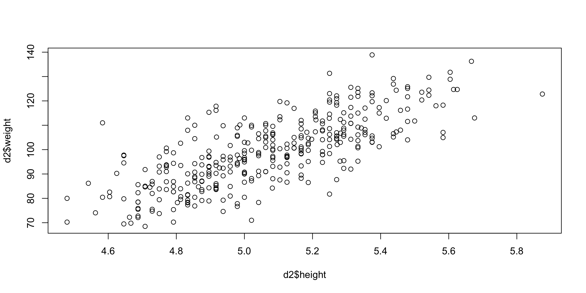
exercise
Update your mathematical model to incorporate height. Simulate from your priors to see the implied regression lines.
\[\begin{align*} w_i &\sim \text{Normal}(\mu_i, \sigma) \\ \mu_i &= \alpha + \beta (h_i - \bar{h}) \\ \alpha &\sim \text{Normal}(130, 20) \\ \beta &\sim \text{Normal}(0, 25) \\ \sigma &\sim \text{Uniform}(0, 25) \\ \end{align*}\]
\(=\) is deterministic – once we know other variables, \(\mu_i\) is known with certainty
made-up parameters are the targets of learning
To simulate from our priors:
# simulate 100 lines
nsims <- 100
sim_alpha = rnorm(nsims, 130, 20)
sim_beta = rnorm(nsims, 0, 25)
# calculate height
xbar = mean(d2$height)
# plot with nothing in it
plot(NULL, xlim = range(d2$height), ylim = c(50, 175),
xlab = "height", ylab = "weight")
abline(h = 0, lty = 2) #line at 0
#plot each line
for(i in 1:nsims){
curve(sim_alpha[i] +sim_beta[i]*(x-xbar),
add = T,
col=col.alpha("#1c5253",0.4))
}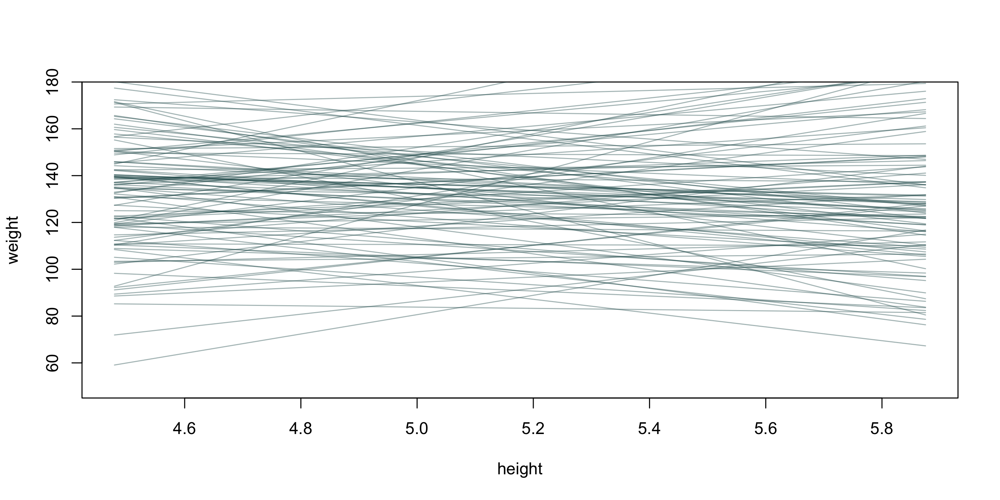
Describe in words what’s wrong with our priors.
Slope should not be negative. How can we fix this?
Could use a uniform distribution bounded by 0.
# simulate 100 lines
nsims <- 100
sim_alpha = rnorm(nsims, 130, 20)
sim_beta = runif(nsims, 0, 50)
# calculate height
xbar = mean(d2$height)
# plot with nothing in it
plot(NULL, xlim = range(d2$height), ylim = c(50, 175),
xlab = "height", ylab = "weight")
abline(h = 0, lty = 2) #line at 0
#plot each line
for(i in 1:nsims){
curve(sim_alpha[i] +sim_beta[i]*(x-xbar),
add = T,
col=col.alpha("#1c5253",0.4))
}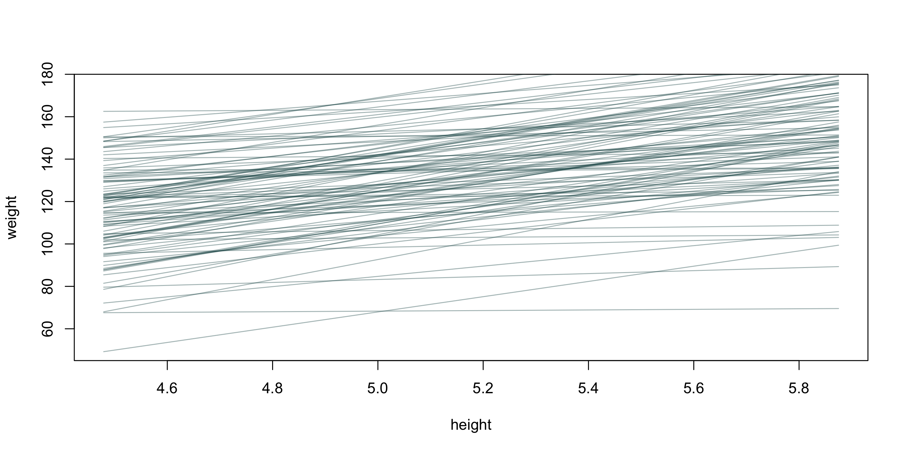
exercise
Fit the new weight model using the quadratic approximation.
solution
flist <- alist(
weight ~ dnorm( mu , sigma ) ,
mu <- a + b*(height - mean(height)),
a ~ dnorm( 130 , 20 ) ,
b ~ dunif(0, 50),
sigma ~ dunif( 0 , 25 )
)
m2 <- quap( flist , data=d2 )
precis( m2 ) mean sd 5.5% 94.5%
a 99.206172 0.4968604 98.412093 100.00025
b 42.295334 1.9594204 39.163801 45.42687
sigma 9.324766 0.3514366 8.763103 9.88643exercise
Draw lines from the posterior distribution and plot with the data.
solution
sample_post = extract.samples(m2, n = 100)
plot(d2$height, d2$weight, cex = .5, pch = 16,
xlim = range(d2$height),
xlab = "height", ylab = "weight")
#plot each line
for(i in 1:nrow(sample_post)){
curve(sample_post$a[i] +sample_post$b[i]*(x-xbar),
add = T,
col=col.alpha("#1c5253",0.1))
}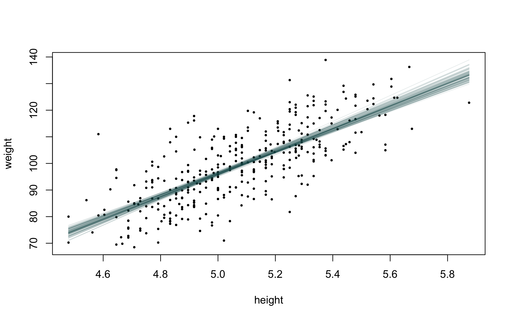
A side note: a major concern or critique of Bayesian analysis is that the subjectivity of the priors allow for nefarious behavior. “Putting our thumbs on the scale,” so to speak. But priors are quickly overwhelmed by data. Case in point:
flist <- alist(
weight ~ dnorm( mu , sigma ) ,
mu <- a + b*(height - mean(height)),
a ~ dnorm( 130 , 20 ) ,
b ~ dnorm(-5, 20),
sigma ~ dunif( 0 , 50 )
)
m2 <- quap( flist , data=d2 )
precis( m2 ) mean sd 5.5% 94.5%
a 99.206057 0.4968976 98.411919 100.000196
b 41.845822 1.9505166 38.728519 44.963124
sigma 9.325467 0.3515152 8.763678 9.887256You’ll only really get into trouble with uniform priors that have a boundary, if true population parameter is outside your boundary. A good rule of thumb is to avoid the uniform distribution. We’ll cover other options for priors for \(\sigma\) in future lectures, but as a preview, the exponential function works very well for this!